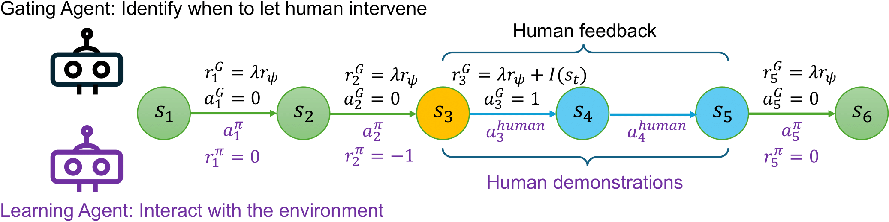
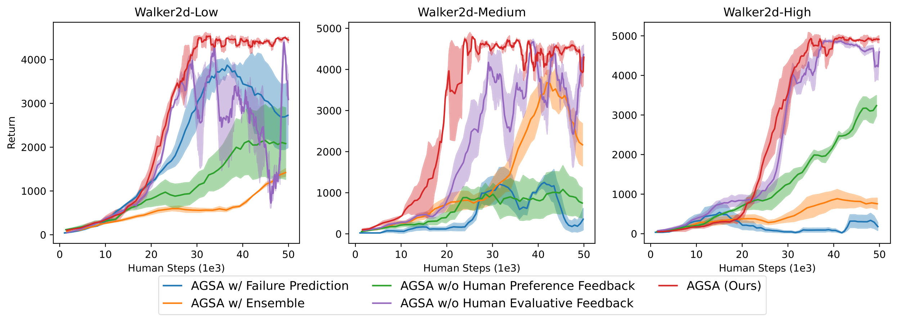

As shown in Fig. 1, The learning agent (in purple) interacts with the environment under the monitoring of the gating agent (in black).
The gating agent decides when to request human intervention.
Learning agent trajectories are in green and human trajectories are in red and yellow.
Human feedbacks are denoted with thumbs up and down.
Feedbacks at \(t_1\) and \(t_3\) are human evaluations on whether the gating agent triggers control switch at proper timesteps.
Feedbacks at \(t_2\) and \(t_4\) are human preferences on whether the current intervention trajectory is better than the previous one.
For example, the trajectory between \(t_3\) and \(t_4\) is better than that between \(t_1\) and \(t_2\), so human may provide positive feedback on \(t_4\).
Method

Fig. 2: The framework for training both the gating agent and the learning agent.
To properly train the gating value function \(Q_g\) for optimal intervention timing, human participants follow three steps, as illustrated in Fig. 3 (upper):
1. Providing a binary signal \(I(s_t)\) that assesses whether the current environment state is indeed worth intervention and is intervened in time.
2. Interacting with the environment for \(T\) steps and offering online demonstration segment
\(\sigma=(s_t,a^{\text{human}}_t,\dots,s_{t+T-1},a^{\text{human}}_{t+T-1})\),
aiming at guiding the learning agent out of the region that is dangerous or no longer needs exploration.
3. Providing a preference signal \(p_t=P_\psi[\sigma\succ \sigma']\in\{0, 0.5, 1\}\),
indicating whether current segment \(\sigma\) is better than the previous segment \(\sigma'\).
Results

Fig. 3: Learning curves of methods in ablation study. We consider the Walker2d environment.
The lines are average return across four different trials and the shadow areas denote the standard deviation.